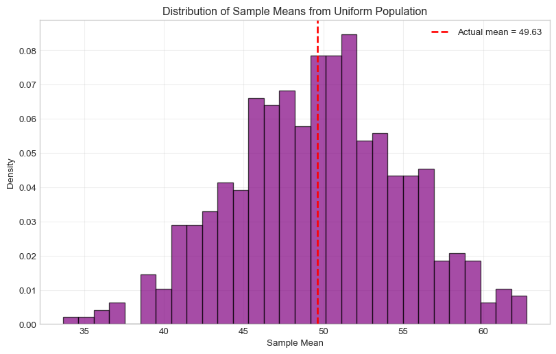

Lab 5 Solutions: Continuous Random Variables & Confidence Intervals
PSTAT 5A - Summer Session A 2025
Author
Complete Solutions Guide
Published
July 20, 2025
Getting Started - Setup Code
# Install any missing packages (will skip those already installed)#!%pip install --quiet numpy matplotlib scipy pandas statsmodels# Load our tools (libraries)import numpy as np # numerical computing (arrays, random numbers, etc.)import matplotlib.pyplot as plt # plotting library for static 2D graphs and visualizationsfrom scipy import stats # statistical functions (distributions, tests, etc.)import pandas as pd # data structures (DataFrame) and data analysis toolsimport statsmodels # statistical modeling (regression, time series, ANOVA, etc.)# Make our graphs look nice#!%matplotlib inline # embed Matplotlib plots directly in the notebookplt.style.use('seaborn-v0_8-whitegrid') # Apply a clean whitegrid style from Seaborn# Set random seed for reproducible resultsnp.random.seed(42) # fix the random seed so results can be reproduced exactlyprint("✅ All tools loaded successfully!")
✅ All tools loaded successfully!
Task 1 Solution: Your First Normal Distribution
Human heights follow a normal distribution with mean = 68 inches and standard deviation = 4 inches.
Mean height: 68.0 inches
Standard deviation: 4.0 inches
# Calculate probabilities - SOLUTION# a) What's the probability someone is taller than 72 inches (6 feet)?prob_tall =1- heights.cdf(72) # SOLUTION: 72print(f"P(height > 72 inches) = {prob_tall:.4f}")# b) What's the probability someone is between 64 and 72 inches?prob_between = heights.cdf(72) - heights.cdf(64) # SOLUTION: 72, 64print(f"P(64 < height < 72) = {prob_between:.4f}")# c) What height is at the 90th percentile? (90% of people are shorter)height_90th = heights.ppf(0.90) # SOLUTION: 0.90print(f"90th percentile height: {height_90th:.2f} inches")
The time between buses follows an exponential distribution with an average of 15 minutes between buses.
# Bus waiting times - SOLUTIONaverage_wait =15# SOLUTION: 15 minutesrate =1/ average_waitbus_times = stats.expon(scale=average_wait) # SOLUTION: average_wait# Questions:# a) What's the probability you wait less than 10 minutes?prob_short = bus_times.cdf(10) # SOLUTION: 10print(f"P(wait < 10 min) = {prob_short:.4f}")# b) What's the probability you wait more than 30 minutes?prob_long =1- bus_times.cdf(30) # SOLUTION: 30print(f"P(wait > 30 min) = {prob_long:.4f}")# c) What's the median waiting time? (50th percentile)median_wait = bus_times.ppf(0.5) # SOLUTION: 0.5print(f"Median wait time: {median_wait:.2f} minutes")
Let’s verify the Central Limit Theorem with a uniform distribution!
# Population: Uniform distribution from 0 to 100 - SOLUTIONpopulation = stats.uniform(loc=0, scale=100)print("Population (Uniform 0 to 100):")print(f"Population mean: {population.mean()}")print(f"Population std: {population.std():.2f}")# Take 500 samples of size 25 each - SOLUTIONsample_size =25# SOLUTION: 25n_samples =500# SOLUTION: 500sample_means = []for i inrange(n_samples): sample = population.rvs(sample_size) # SOLUTION: sample_size sample_means.append(np.mean(sample))# Check the CLT predictionpredicted_mean = population.mean()predicted_std = population.std() / np.sqrt(sample_size)print(f"\nCLT Predictions:")print(f"Sample means should have mean ≈ {predicted_mean:.2f}")print(f"Sample means should have std ≈ {predicted_std:.2f}")print(f"\nActual Results:")print(f"Sample means actually have mean = {np.mean(sample_means):.2f}")print(f"Sample means actually have std = {np.std(sample_means):.2f}")# Make a histogramplt.figure(figsize=(10, 6))plt.hist(sample_means, bins=30, density=True, alpha=0.7, color='purple', edgecolor='black')plt.title('Distribution of Sample Means from Uniform Population')plt.xlabel('Sample Mean')plt.ylabel('Density')plt.axvline(np.mean(sample_means), color='red', linestyle='--', linewidth=2, label=f'Actual mean = {np.mean(sample_means):.2f}')plt.legend()plt.grid(True, alpha=0.3)plt.show()
Population (Uniform 0 to 100):
Population mean: 50.0
Population std: 28.87
CLT Predictions:
Sample means should have mean ≈ 50.00
Sample means should have std ≈ 5.77
Actual Results:
Sample means actually have mean = 49.63
Sample means actually have std = 5.29

Task 4 Solution: Your Own Confidence Interval
Creating a 90% confidence interval for homework time data.
# Homework time data (in hours per week) - SOLUTIONnp.random.seed(456)homework_data = np.random.normal(15, 5, 40) # 40 students, roughly normalprint("Homework Survey Results:")print(f"Sample size: {len(homework_data)}")print(f"Sample mean: {np.mean(homework_data):.2f} hours/week")print(f"Sample std dev: {np.std(homework_data, ddof=1):.2f} hours/week")# Create a 90% confidence interval - SOLUTION# Step 1: Calculate the needed valuessample_mean = np.mean(homework_data)sample_std = np.std(homework_data, ddof=1)n =len(homework_data)# Step 2: Find the critical value for 90% confidenceconfidence =0.90alpha =1- confidencez_star = stats.norm.ppf(1- alpha/2)print(f"Critical value for 90% confidence: {z_star:.3f}")# Step 3: Calculate standard error and margin of errorstandard_error = sample_std / np.sqrt(n)margin_of_error = z_star * standard_errorprint(f"Standard error: {standard_error:.3f}")print(f"Margin of error: {margin_of_error:.3f}")# Step 4: Build the confidence intervalci_lower = sample_mean - margin_of_errorci_upper = sample_mean + margin_of_errorprint(f"\n90% Confidence Interval for average homework time:")print(f"[{ci_lower:.2f}, {ci_upper:.2f}] hours per week")# Step 5: Interpret your resultprint(f"\nInterpretation:")print(f"We are 90% confident that the true average homework time")print(f"for all students is between {ci_lower:.2f} and {ci_upper:.2f} hours per week.")
Homework Survey Results:
Sample size: 40
Sample mean: 15.52 hours/week
Sample std dev: 4.82 hours/week
Critical value for 90% confidence: 1.645
Standard error: 0.763
Margin of error: 1.255
90% Confidence Interval for average homework time:
[14.27, 16.77] hours per week
Interpretation:
We are 90% confident that the true average homework time
for all students is between 14.27 and 16.77 hours per week.
Comparison Questions:
How would a 95% confidence interval compare to your 90% interval?
A 95% CI would be wider than the 90% CI because we need more “room” to be more confident.
What if you had surveyed 100 students instead of 40?
The CI would be narrower because larger sample sizes give more precise estimates.
# Demonstrate the comparisonsprint("Comparison of different confidence levels:")print("="*45)# 90% vs 95% confidence intervalsfor conf_level in [0.90, 0.95]: alpha =1- conf_level z_crit = stats.norm.ppf(1- alpha/2) margin = z_crit * standard_error lower = sample_mean - margin upper = sample_mean + margin width = upper - lowerprint(f"{conf_level*100:2.0f}% CI: [{lower:.2f}, {upper:.2f}], width = {width:.2f}")print("\nComparison of different sample sizes (95% CI):")print("="*45)# Different sample sizes (simulated)for sample_size_comp in [40, 100]: se_comp = sample_std / np.sqrt(sample_size_comp) margin_comp =1.96* se_comp # 95% CI lower_comp = sample_mean - margin_comp upper_comp = sample_mean + margin_comp width_comp = upper_comp - lower_compprint(f"n={sample_size_comp:3d}: [{lower_comp:.2f}, {upper_comp:.2f}], width = {width_comp:.2f}")
# SOLUTIONprint("SOLUTIONS:")print("A. Time between arrivals: 3 (Exponential)") print("B. Heights: 1 (Normal)") print("C. Die roll: 4 (Discrete uniform)") print("D. Temperature: 1 (Normal)") print("E. Coin flip: 5 (Bernoulli)") print("\nReasoning:")print("A. Exponential - Time between events follows exponential distribution")print("B. Normal - Heights of people are naturally normally distributed") print("C. Discrete uniform - All 6 outcomes (1,2,3,4,5,6) equally likely")print("D. Normal - Temperature measurements tend to be normally distributed")print("E. Bernoulli - Two outcomes (heads/tails) with fixed probability")
SOLUTIONS:
A. Time between arrivals: 3 (Exponential)
B. Heights: 1 (Normal)
C. Die roll: 4 (Discrete uniform)
D. Temperature: 1 (Normal)
E. Coin flip: 5 (Bernoulli)
Reasoning:
A. Exponential - Time between events follows exponential distribution
B. Normal - Heights of people are naturally normally distributed
C. Discrete uniform - All 6 outcomes (1,2,3,4,5,6) equally likely
D. Normal - Temperature measurements tend to be normally distributed
E. Bernoulli - Two outcomes (heads/tails) with fixed probability
🎯 Lab 5 Complete Solutions Summary
✅ Task 1: Normal distribution calculations with human heights
✅ Task 2: Exponential distribution for bus waiting times
✅ Task 3: Central Limit Theorem verification with uniform distribution
✅ Task 4: 90% confidence interval construction for homework data
✅ Task 5: Distribution matching exercise with reasoning
Key Takeaways:
Continuous distributions use PDFs and calculate probabilities as areas
Normal distribution is fundamental and appears everywhere via CLT
Confidence intervals provide ranges of plausible values for parameters